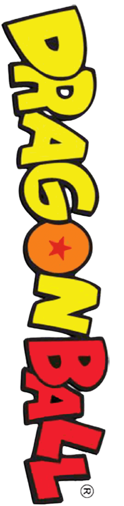
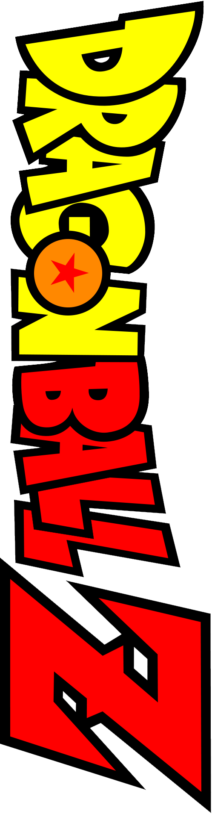
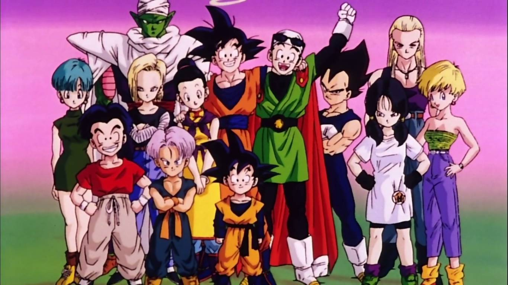
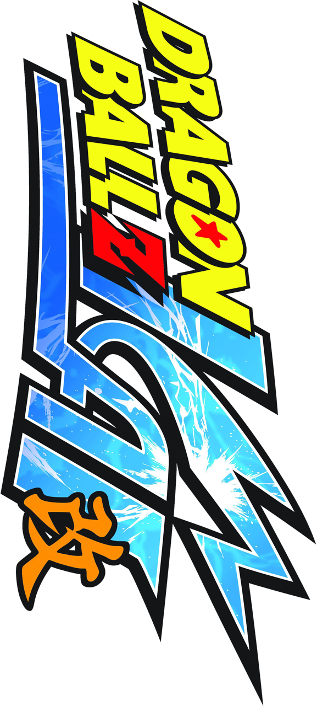
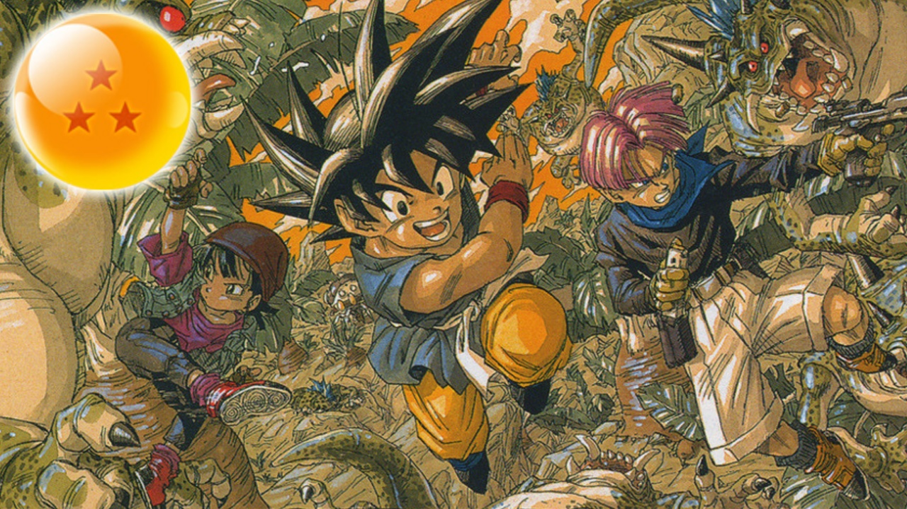
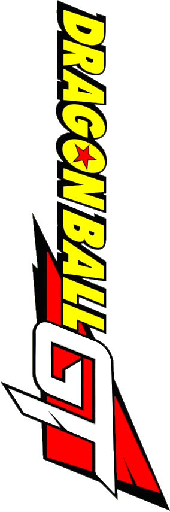
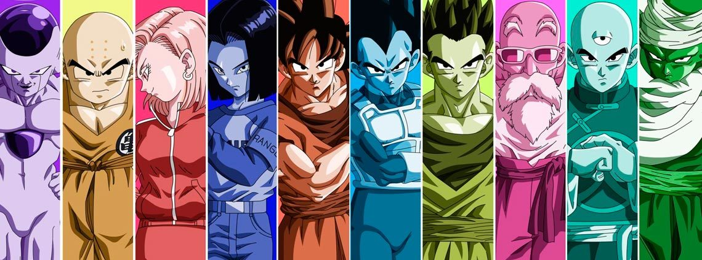

Navbar
Home
Link
Dropdown
Action
Another action
Something else here
Disabled
Search
La serie
Dragon Ball
es el origen de todo cuando Goku era un peque y conocio a
Bulma, Krilin y al maestro Roshi
. Esta serie cuenta con siete sagas: Saga de Pilaf, 21° Torneo de las artes marciales, Saga de Ejército de liston rojo, El palacio de Uraina Baba, 22° Torneo de las artes marciales, Saga de Piccolo Daimuka, 23°torneo de las artes marciales

La serie
Dragon Ball Z
es una de las mas polulares de la franquicia. En esta se aborda las aventuras de Goku en su etapa adulta, y verá la llegada de muchos personajes iconicos que vinieron a quedarse tales como Vegeta o Freezer. Esta serie cuenta con cinco sagas: Saga sayajin, Saga Freezer, Saga Garlick Jr., Saga de Cell y la Saga de Majin Buu


La serie
Dragon Ball Z Kai
es en esencia una remasterizacion de Dragon Ball Z.
Se descarta el relleno y ofrece una remasterizacion en alta definición de los episodios emitidos en los 90. Tambien incluye nuevo doblaje y se realizaron nuevos openings y endings. Esta cuenta con cuatro sagas: Saga sayajin, Saga Freezer, Saga de Cell y la Saga de Majin Buu


La serie
Dragon Ball GT
es la secuela de Dragon Ball Z.
En esta Goku vuelve a ser un chaval por un deseo de Pilaf. A contrareloj, debera hallar las esferas del dragon de estrellas negras para deshacer el deseo y salvar la tierra de la destrucción. Cuenta con cuatro sagas: El gran viaje, Saga de Baby,
Saga Super N.°17, Saga de los dragones oscuros


La serie
Dragon Ball Super
es la mas reciente de la franquicia, se trata de una historia que transcurre dentro de la misma serie Dragon Ball Z. Concretamente esta actua como puente entre los episodios 288 y 298 dentro de la saga de Majin Buu. La serie cuenta con 5 sagas: La Batalla de los Dioses de la destrucción, La resurreción de Freezer, El universo 6 y 7, Trunks del 'futuro' Saga de black Goku y El Torneo del Poder